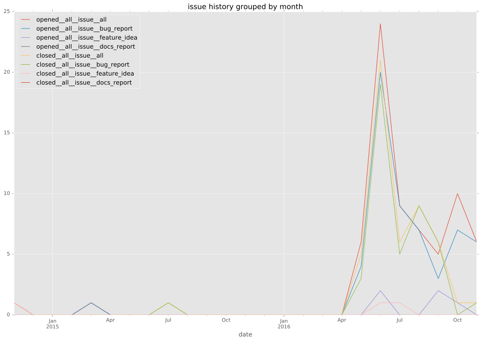
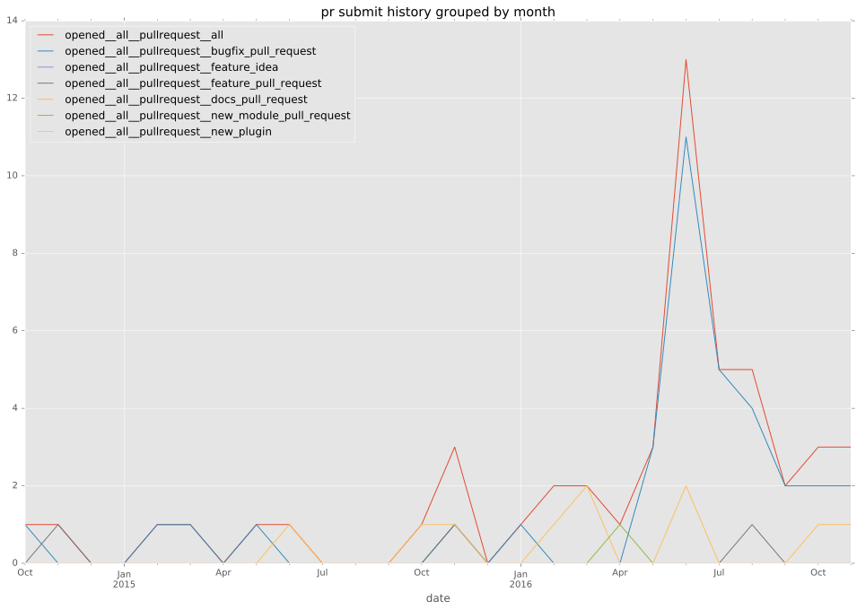
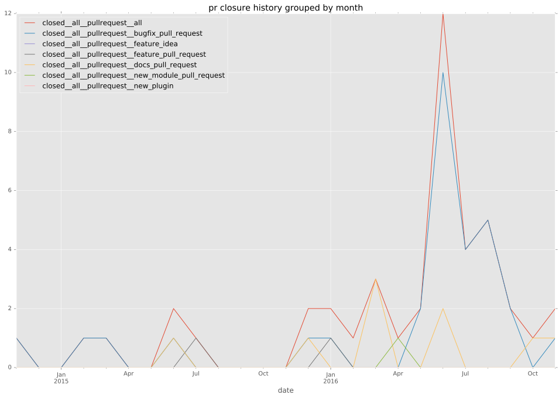
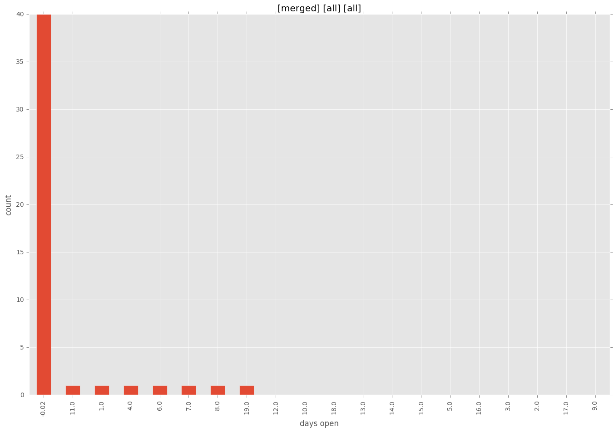
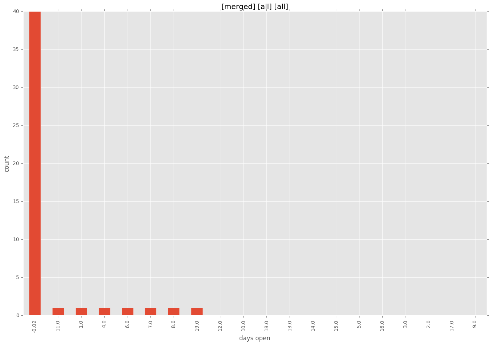

authors
- cove
- joshuaconner
- softzilla
- ThomasSteinbach
- zfil
- dusdanig
- jctanner
- chouseknecht
maintainers
- ansible
contributors
- chouseknecht : 384 commits
- bcoca : 57 commits
- gundalow : 22 commits
- Hypermanzer : 13 commits
- winggundamth : 1 commits
- quater : 1 commits
- muxator : 1 commits
- dminca : 1 commits
- danschmidt5189 : 1 commits
total issue counts
unknown: 1
feature pull request: 7
docs report: 2
pullrequest: 62
docs pull request: 6
bugfix pull request: 47
feature idea: 9
issue: 64
new plugin: 1
bug report: 53
issue history

pullrequest history


days open by issue type
bugfix pull request
count: 80
std: 4.81131314479
min: 0
max: 21
median: 0.0
mean: 1.625
all
count: 159
std: 39.0211505095
min: 0
max: 361
median: 0.0
mean: 9.11949685535
pullrequest
count: 0
std: nan
min: nan
max: nan
median: nan
mean: nan
docs pull request
count: 12
std: 1.90692517849
min: 0
max: 5
median: 0.0
mean: 1.0
docs report
count: 0
std: nan
min: nan
max: nan
median: nan
mean: nan
feature pull request
count: 11
std: 128.067524803
min: 0
max: 361
median: 2.0
mean: 74.0909090909
feature idea
count: 5
std: 56.1711669809
min: 0
max: 128
median: 10.0
mean: 41.2
issue
count: 0
std: nan
min: nan
max: nan
median: nan
mean: nan
new plugin
count: 2
std: 0.0
min: 7
max: 7
median: 7.0
mean: 7.0
bug report
count: 48
std: 9.84379327076
min: 0
max: 50
median: 1.0
mean: 5.6875
closures grouped by total days open


 
